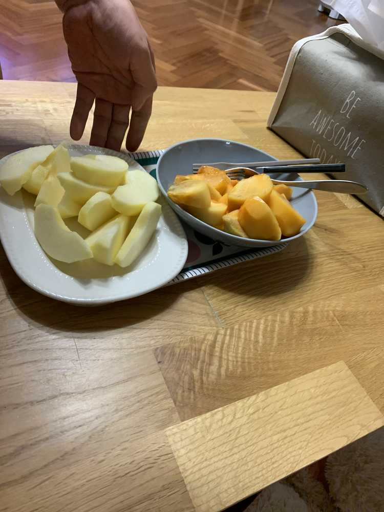

갑자기 분위기 아빠가 깍아준 과일..ㅋㅋㅋㅋㅋㅋㅋㅋㅋ
답답해가지고 침대에서 벗어난 곳은
그래봤자 소파..ㅋㅋㅋㅋ였당
어제는 나고야 오기 전에
언제 일어났지 ..
오후 1시쯤에 일어났어요!
다들 식탁에서 뭘 먹고 있길래
다시 방 안에 들어와서 나는 뭘 먹어야 좋을 까..
생각하다가
맑은 어묵탕...? 해서
메뉴를 봤는데
매운맛이 있고 순한맛이 있었나..? 그랬는데
나는 당연히 그림이 둘 다 똑같이 어묵탕이길래
청양고추의 유무로 매운맛 순한맛이 달라지는 줄
알아서 매운맛을 시켰는데
이.럴.수.가
그냥 떡볶이 국물 베이스에 어묵만 온 거예요..
진짜 이렇게 왔다기 보다
맛의 느낌은 이랬어요 ..
그래서 같이 시킨 김밥만 먹었답니다..웃프다
이거만 먹기 조금 부족해서 무가당 요거트도 먹긴 했는데
이 것도 매일매일 먹으니까
살짝 질린 거 같...어제따라 왜이렇게 셨지..
아 그래도 3일 간 요거트랑 한약은
안 먹었습니다ㅋㅋㅋㅋㅋㅋㅋㅋㅋㅋㅋㅋㅋㅋㅋㅋㅋㅋㅋㅋㅋㅋㅋㅋㅋ그건 조금 좋았던 거 같기도..
기내식으로 샌드위치인 가 나왔는데
파인애플이 있길래 아 파인애플만 먹어야겠다 먹고 있었어요
옆에서 민주가 샌드위치 안에 있는 연어만 통째로 집어넣어서 나도 연어만 조금 베어물었다가
깨달았어요
날 것을 많이 먹어서 그랬던 거 아닐 까..ㅋㅋㅋㅋ
나 왜 추측하고 다녀..
아무튼 연어친구랑 조금 사이가 안좋아졌어요 저
잠시 시간이 필요해
이젠 누구랑 친해져볼까..